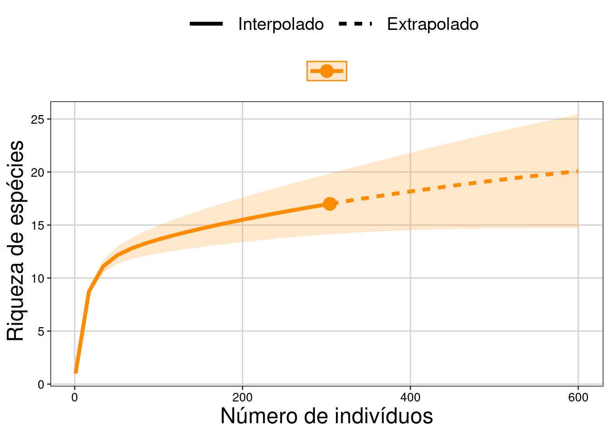
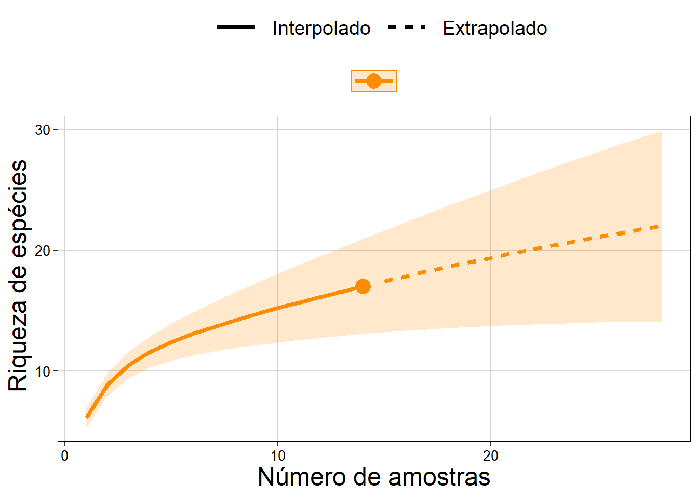

Capítulo 11 Estimadores de riqueza
Pré-requisitos do capítulo
# Carregando todos os pacotes que serão utilizados neste capítulo.
library(iNEXT)
library(devtools)
# remotes::install_github("paternogbc/ecodados")
library(ecodados)
library(ggplot2)
library(vegan)
library(nlme)
library(dplyr)
library(piecewiseSEM)
## Dados necessários
dados_coleta <- poca_anuros
data("mite")
data("mite.xy")
coord <- mite.xy
colnames(coord) <- c("long", "lat") # altera o nome das colunas
data("mite.env")
agua <- mite.env[,2] # seleciona a variável de interesse11.1 Aspectos teóricos
Uma vez que determinar o número total de espécies numa área é praticamente impossível, principalmente em regiões com alta riqueza de espécies, os estimadores são úteis para extrapolar a riqueza observada e tentar estimar a riqueza total através de uma amostra incompleta de uma comunidade biológica (Walther and Moore 2005). Neste capítulo, serão considerados os estimadores não paramétricos que usam informações da frequência de espécies raras na comunidade (N. J. Gotelli and Chao 2013). Isto porque tanto os testes paramétricos que tentam determinar os parâmetros de uma curva usando o formato da curva de acumulação de espécies (e.g. equação logística, Michaelis-Menten), quanto os testes que usam a frequência do número de indivíduos para enquadrá-las em uma das distribuições de abundância das espécies (e.g. distribuições log-séries, log-normal) não funcionam muito bem com dados empíricos (N. J. Gotelli and Chao 2013). Para mais detalhes sobre os testes paramétricos veja (Magurran and McGill 2011) e Colwell & Coddington (1994).
Quatro características para um bom estimador de riqueza (Chazdon et al. 1998; Hortal, Borges, and Gaspar 2006):
- Independência do tamanho da amostra (quantidade de esforço amostral realizado);
- Insensibilidade a diferentes padrões de distribuições (e.g. agrupado, disperso ou aleatório);
- Insensibilidade em relação à ordem das amostragens;
- Insensibilidade à heterogeneidade entre as amostras usadas entre os estudos.
11.2 Estimadores baseados na abundância das espécies
11.2.1 CHAO 1 - (A. Chao 1984, 1987):
Estimador simples do número absoluto de espécies em uma comunidade. É baseado no número de espécies raras dentro de uma amostra.
\[Chao_{1} = S_{obs} + \left(\frac{n-1}{n}\right)\frac{F_1(F_1-1)}{2(F_2+1)}\]
onde:
Sobs = número de espécies observadas na comunidade,
n = número de amostras,
F1 = número de espécies observadas com abundância de um indivíduo (espécies singleton),
F2 = número de espécies observadas com abundância de dois indivíduos (espécies doubletons).
O valor de Chao 1 é máximo quando todas as espécies menos uma são únicas (singleton). Neste caso, a riqueza estimada é aproximadamente o dobro da riqueza observada.
11.2.1.1 Exemplo prático - Chao 1
Explicação dos dados
Usaremos os dados de 17 espécies de anuros amostradas em 14 dias de coletas de campo em um habitat reprodutivo localizado na região noroeste do estado de São Paulo, Brasil.
Pergunta:
Quantas espécies a mais poderiam ser amostradas caso aumentássemos até o infinito o esforço amostral?
Predições
- O número de espécies estimadas é similar ao número de espécies observada;
- O número de espécies estimadas é maior do que o número de espécies observada.
Variáveis
Variáveis resposta e preditora
- data frame ou matriz com as abundâncias das espécies de anuros (variável resposta) registradas em 14 dias de amostragens (variável preditora) em um habitat reprodutivo.
Checklist
- Verificar se a sua matriz está com as espécies nas colunas e as amostragens nas linhas.
- Verificar se os dados são de abundância e não de incidência (presença e ausência).
Análise
Vamos olhar os dados.
head(poca_anuros)
#> Boana_albopunctata Boana_faber Boana_raniceps Dendropsophus_eliane
#> Dia_1 5 0 2 0
#> Dia_2 0 0 0 0
#> Dia_3 0 0 0 6
#> Dia_4 0 0 0 15
#> Dia_5 0 0 0 2
#> Dia_6 1 0 0 2
#> Dendropsophus_melanargyrius Dendropsophus_minutus Dendropsophus_nanus
#> Dia_1 0 0 4
#> Dia_2 0 2 0
#> Dia_3 0 1 3
#> Dia_4 0 15 15
#> Dia_5 1 8 2
#> Dia_6 0 2 2
#> Dermatonotus_muelleri Elachistocleis_bicolor Elachistocleis_sp Leptodactylus_chaquensis
#> Dia_1 0 0 0 0
#> Dia_2 0 0 0 0
#> Dia_3 0 0 0 0
#> Dia_4 3 0 0 0
#> Dia_5 12 0 0 11
#> Dia_6 0 0 0 0
#> Leptodactylus_fuscus Leptodactylus_labyrinthicus Physalameus_cuvieri
#> Dia_1 8 0 5
#> Dia_2 3 0 3
#> Dia_3 2 0 4
#> Dia_4 5 0 2
#> Dia_5 4 0 2
#> Dia_6 2 0 2
#> Physalaemus_nattereri Rhinella_schneideri Scinax_fuscovarius
#> Dia_1 0 2 0
#> Dia_2 4 1 0
#> Dia_3 1 2 0
#> Dia_4 0 2 0
#> Dia_5 17 1 0
#> Dia_6 0 1 0Cálculo do estimador de riqueza - Chao 1.
# Análise.
est_chao1 <- estaccumR(dados_coleta, permutations = 100)
summary(est_chao1, display = "chao")
#> $chao
#> N Chao 2.5% 97.5% Std.Dev
#> Dia_13 1 7.161667 3.000 12.33333 2.786019
#> Dia_7 2 10.255429 6.000 18.81250 3.465467
#> Dia_12 3 11.614500 7.475 19.52500 3.104127
#> Dia_5 4 13.078167 9.000 20.00000 3.037566
#> Dia_6 5 14.093333 9.000 22.00000 3.259457
#> Dia_4 6 14.621667 10.000 22.00000 3.129084
#> Dia_10 7 15.308333 10.475 22.00000 3.048741
#> Dia_1 8 16.140000 12.000 22.00000 2.863106
#> Dia_11 9 16.773333 12.000 22.00000 2.777931
#> Dia_8 10 17.606667 13.000 22.00000 2.754093
#> Dia_3 11 18.205000 13.000 22.00000 2.453708
#> Dia_9 12 18.815000 14.975 22.00000 2.034618
#> Dia_14 13 19.585000 15.500 22.00000 1.494189
#> Dia_2 14 20.000000 20.000 20.00000 0.000000
#>
#> attr(,"class")
#> [1] "summary.poolaccum"Percebam que a função retorna: N = número de amostragens; Chao = valor médio da estimativa do índice de Chao; 2.5% e 97.5% = intervalo de confiança de 95%; e Std.Dev = desvio padrão. Essas dados são obtidos usando permutações, sem reposição, que alteram a ordem das amostragens. Neste exemplo, usamos 100 permutações.
Vamos visualizar os resultados com intervalo de confiança de 95%.
# Preparando os dados para fazer o gráfico.
resultados <- summary(est_chao1, display = c("S", "chao"))
res_chao <- cbind(resultados$chao[,1:4], resultados$S[,2:4])
res_chao <- as.data.frame(res_chao)
colnames(res_chao) <- c("Amostras", "Chao", "C_inferior", "C_superior",
"Riqueza", "R_inferior", "R_superior")
# Comando para o gráfico.
ggplot(res_chao, aes(y = Riqueza, x = Amostras)) +
geom_point(aes(y = Chao, x = Amostras + 0.1), size = 4, color = "darkorange", alpha = 0.7) +
geom_point(aes(y = Riqueza, x = Amostras), size = 4, color = "cyan4", alpha = 0.7) +
geom_line (aes(y = Chao, x = Amostras), color = "darkorange") +
geom_line (aes(y = Riqueza, x = Amostras), color = "cyan4") +
geom_linerange(aes(ymin = C_inferior, ymax = C_superior,
x = Amostras + 0.1), color = "darkorange") +
geom_linerange(aes(ymin = R_inferior, ymax = R_superior,
x = Amostras), color = "cyan4") +
ylab ("Riqueza estimada - Chao 1") +
xlab ("Número de amostras") +
scale_x_continuous(limits = c(1,15), breaks=seq(1,15,1)) +
geom_point(y= 7.5, x = 9, size = 4, color = "darkorange", alpha = 0.7) +
geom_point(y= 5.9, x = 9, size = 4, color = "cyan4", alpha = 0.7) +
geom_label( y = 7.5, x = 12, label = "Riqueza estimada - Chao 1") +
geom_label( y = 5.9, x = 11.3, label = "Riqueza observada") +
tema_livro()
Interpretação dos resultados
Com base no número de espécies raras (singletons e doubletons), o estimador Chao 1 indica a possibilidade de encontrarmos mais três espécies caso o esforço amostral fosse maior e não estima tendência de estabilização da curva em uma assíntota.
11.2.2 ACE - Abundance-based Coverage Estimador (A. Chao and Lee 1992; A. Chao et al. 2000):
Este método trabalha com a abundância das espécies raras (i.e. abundância baixa). Entretanto, diferente do estimador anterior, esse método permite ao pesquisador determinar os limites para os quais uma espécie seja considerada rara. Em geral, são consideradas raras espécies com abundância entre 1 e 10 indivíduos. A riqueza estimada pode variar conforme se aumente ou diminua o limiar de abundância, e infelizmente não existem critérios biológicos definidos para a escolha do melhor intervalo.
\[ACE = S_{abund} + \frac{S_{rare}}{C_{ace}} + \frac{F_1}{C_{ace}}Y_{ace}^2\]
onde:
\[Y_{ace}^2 = max \left[\frac{S_{rare}}{C_{ace}}\frac{\sum_{i=i}^{10}i(i-1)F1}{(N_{rare})({N_{rare} - 1)}}-1,0\right]\]
\[C_{ace} = 1 - \frac{F1}{N_{rare}}\]
\[N_{rare} = \sum_{i=1}^{10}iF_i\]
11.2.2.1 Exemplo prático - ACE
Explicação dos dados
Usaremos os mesmos dados de 17 espécies de anuros amostradas em 14 dias de coletas de campo em um habitat reprodutivo localizado na região noroeste do estado de São Paulo, Brasil.
Análise
Cálculo do estimador de riqueza - ACE.
# Análise.
est_ace <- estaccumR(dados_coleta, permutations = 100)
summary(est_ace, display = "ace")
#> $ace
#> N ACE 2.5% 97.5% Std.Dev
#> Dia_11 1 7.123899 3.545190 13.71429 2.768212
#> Dia_3 2 9.832864 6.000000 18.42880 2.876526
#> Dia_2 3 11.395043 7.619618 18.01220 2.668935
#> Dia_14 4 12.442264 8.000000 17.13587 2.398428
#> Dia_7 5 13.512461 9.328990 19.24111 2.482220
#> Dia_8 6 14.249301 10.179603 19.70014 2.608287
#> Dia_6 7 15.272604 10.712067 21.68808 2.950251
#> Dia_5 8 16.269161 11.419992 22.61582 3.000033
#> Dia_12 9 17.584889 12.635634 24.20307 3.149600
#> Dia_1 10 19.491955 13.410767 25.28994 3.732346
#> Dia_13 11 21.058884 13.923335 25.72368 3.607014
#> Dia_9 12 22.452802 15.911357 25.72368 3.249493
#> Dia_4 13 23.796512 17.676471 25.72368 2.243847
#> Dia_10 14 24.703704 24.703704 24.70370 0.000000
#>
#> attr(,"class")
#> [1] "summary.poolaccum"Visualizar os resultados com intervalo de confiança de 95%.
# Preparando os dados para fazer o gráfico.
resultados_ace <- summary(est_ace, display = c("S", "ace"))
res_ace <- cbind(resultados_ace$ace[,1:4], resultados_ace$S[,2:4])
res_ace <- as.data.frame(res_ace)
colnames(res_ace) <- c("Amostras", "ACE", "ACE_inferior", "ACE_superior",
"Riqueza", "R_inferior", "R_superior")
# Gráfico.
ggplot(res_ace, aes(y = Riqueza, x = Amostras)) +
geom_point(aes(y = ACE, x = Amostras + 0.1), size = 4, color = "darkorange", alpha = 0.7) +
geom_point(aes(y = Riqueza, x = Amostras), size = 4, color = "cyan4", alpha = 0.7) +
geom_line (aes(y = ACE, x = Amostras), color = "darkorange") +
geom_line (aes(y = Riqueza, x = Amostras), color = "cyan4") +
geom_linerange(aes(ymin = ACE_inferior, ymax = ACE_superior, x = Amostras + 0.1),
color = "darkorange") +
geom_linerange(aes(ymin = R_inferior, ymax = R_superior, x = Amostras), color = "cyan4") +
ylab ("Riqueza estimada - ACE") +
xlab ("Número de amostras") +
scale_x_continuous(limits = c(1,15), breaks=seq(1,15,1)) +
geom_point(y= 7.5, x = 9, size = 4, color = "darkorange", alpha = 0.7) +
geom_point(y= 5.9, x = 9, size = 4, color = "cyan4", alpha = 0.7) +
geom_label( y = 7.5, x = 11.7, label = "Riqueza estimada - ACE") +
geom_label( y = 5.9, x = 11.3, label = "Riqueza observada") +
tema_livro()
Interpretação dos resultados
Com base no número de espécies raras (abundância menor que 10 indivíduos - default), o estimador ACE indica a possibilidade de encontrarmos mais sete espécies caso o esforço amostral fosse maior e não estimou tendência de estabilização da curva em uma assíntota.
11.3 Estimadores baseados na incidência das espécies
11.3.1 CHAO 2 - (A. Chao 1987):
De acordo com Anne Chao, o estimador Chao 1 pode ser modificado para uso com dados de presença/ausência levando em conta a distribuição das espécies entre amostras. Neste caso é necessário somente conhecer o número de espécies encontradas em somente uma amostra e o número de espécies encontradas exatamente em duas amostras. Essa variação ficou denominada como Chao 2:
\[Chao_{2} = S_{obs} + \left(\frac{m-1}{m}\right)\left(\frac{Q_1(Q_1-1)}{2(Q_2 + 1}\right)\]
onde:
Sobs = o número de espécies observada na comunidade,
m = número de amostras,
Q1 = número de espécies observadas em uma amostra (espécies uniques),
Q2 = número de espécies observadas em duas amostras (espécies duplicates).
O valor de Chao2 é máximo quando as espécies menos uma são únicas (uniques). Neste caso, a riqueza estimada é aproximadamente o dobro da riqueza observada.
Colwell & Coddington (1994) encontraram que o valor de Chao 2 mostrou ser o estimador menos enviesado para amostras com tamanho pequeno.
📝 Importante: Vocês irão perceber que ao longo do capítulo as recomendações sobre qual é o melhor índice varia entre estudos (e.g. Palmer 1990; Walther and Moore 2005).
11.3.1.1 Exemplo prático - Chao 2
Explicação dos dados
Usaremos os mesmos dados de 17 espécies de anuros amostradas em 14 dias de coletas de campo em um habitat reprodutivo localizado na região noroeste do estado de São Paulo, Brasil.
Análise
Cálculo do estimador de riqueza - Chao 2.
# Análise.
est_chao2 <- poolaccum(dados_coleta, permutations = 100)
summary(est_chao2, display = "chao")
#> $chao
#> N Chao 2.5% 97.5% Std.Dev
#> [1,] 3 14.31571 9.211111 24.35000 3.909186
#> [2,] 4 15.12125 8.796875 26.50000 4.676977
#> [3,] 5 17.18113 10.485000 34.12500 5.116710
#> [4,] 6 18.40042 11.336806 34.50625 5.802968
#> [5,] 7 20.06214 12.142857 34.00000 6.145670
#> [6,] 8 21.28187 12.391927 38.11562 6.923969
#> [7,] 9 22.60556 12.538889 36.82500 6.845149
#> [8,] 10 25.94025 14.327500 42.20000 7.446691
#> [9,] 11 27.58773 15.401136 39.27273 6.931535
#> [10,] 12 29.55229 19.933333 39.45833 6.111500
#> [11,] 13 31.51769 22.384615 39.61538 4.586452
#> [12,] 14 33.71429 33.714286 33.71429 0.000000
#>
#> attr(,"class")
#> [1] "summary.poolaccum"Visualizar os resultados com intervalo de confiança de 95%.
# Preparando os dados para fazer o gráfico.
resultados_chao2 <- summary(est_chao2, display = c("S", "chao"))
res_chao2 <- cbind(resultados_chao2$chao[,1:4], resultados_chao2$S[,2:4])
res_chao2 <- as.data.frame(res_chao2)
colnames(res_chao2) <- c("Amostras", "Chao2", "C_inferior", "C_superior",
"Riqueza", "R_inferior", "R_superior")
# Gráfico
ggplot(res_chao2, aes(y = Riqueza, x = Amostras)) +
geom_point(aes(y = Chao2, x = Amostras + 0.1), size = 4, color = "darkorange", alpha = 0.7) +
geom_point(aes(y = Riqueza, x = Amostras), size = 4, color = "cyan4", alpha = 0.7) +
geom_line (aes(y = Chao2, x = Amostras), color = "darkorange") +
geom_line (aes(y = Riqueza, x = Amostras), color = "cyan4") +
geom_linerange(aes(ymin = C_inferior, ymax = C_superior, x = Amostras + 0.1),
color = "darkorange") +
geom_linerange(aes(ymin = R_inferior, ymax = R_superior, x = Amostras), color = "cyan4") +
ylab ("Riqueza estimada - Chao 2") +
xlab ("Número de amostras") +
scale_x_continuous(limits = c(1,15), breaks=seq(1,15,1)) +
geom_point(y= 9.8, x = 10, size = 4, color = "darkorange", alpha = 0.7) +
geom_point(y= 7.7, x = 10, size = 4, color = "cyan4", alpha = 0.7) +
geom_label( y = 9.8, x = 12.95, label = "Riqueza estimada - Chao 2") +
geom_label( y = 7.7, x = 12.3, label = "Riqueza observada") +
tema_livro()
Interpretação dos resultados
Com base no número de espécies raras (uniques e duplicates), Chao 2 estimou a possibilidade de encontrarmos mais dezesseis espécies caso o esforço amostral fosse maior e não estimou tendência de estabilização da curva em uma assíntota.
11.3.2 JACKKNIFE 1 (Burnham and Overton 1978, 1979):
Este estimador baseia-se no número de espécies que ocorrem em somente uma amostra (Q1).
\[S_{jack1} = S_{obs} + Q_1\left(\frac{m - 1}{m}\right)\]
onde:
Sobs = o número de espécies observadas na comunidade,
Q1 = número de espécies observadas em uma amostra (espécies uniques),
m = número de amostras.
Jackknife é um método de reamostragem (sem repetição) não paramétrico usado para estimar a riqueza de espécies e a variância associada com a estimativa. Para isso, o método: i) exclui uma amostra e contabiliza o valor da riqueza estimada usando a fórmula acima; ii) repete este processo n vezes até que todas as amostras tenham sido excluídas; e iii) estima a média e a variância da riqueza de espécie (Smith and van Belle 1984).
Palmer (1990) verificou que Jackknife 1 foi o estimador mais preciso e menos enviesado comparado a outros métodos de extrapolação.
11.3.2.1 Exemplo prático - Jackknife 1
Explicação dos dados
Usaremos os mesmos dados de 17 espécies de anuros amostradas em 14 dias de coletas de campo em um habitat reprodutivo localizado na região noroeste do estado de São Paulo, Brasil.
Análise
Cálculo do estimador de riqueza - Jackknife 1.
# Análise.
est_jack1 <- poolaccum(dados_coleta, permutations = 100)
summary(est_jack1, display = "jack1")
#> $jack1
#> N Jackknife 1 2.5% 97.5% Std.Dev
#> [1,] 3 13.64667 8.333333 19.17500 2.798035
#> [2,] 4 14.75000 9.750000 20.01250 2.788188
#> [3,] 5 15.32800 9.800000 20.42000 2.780091
#> [4,] 6 16.01500 11.229167 21.96250 2.802425
#> [5,] 7 17.07714 12.782143 22.93214 2.575868
#> [6,] 8 18.11625 14.165625 23.12500 2.536306
#> [7,] 9 18.77778 14.719444 23.22222 2.609373
#> [8,] 10 19.56100 14.800000 23.77250 2.586909
#> [9,] 11 20.42455 16.727273 23.36364 2.190412
#> [10,] 12 21.16000 17.185417 23.41667 1.863867
#> [11,] 13 21.92846 18.692308 23.46154 1.335047
#> [12,] 14 22.57143 22.571429 22.57143 0.000000
#>
#> attr(,"class")
#> [1] "summary.poolaccum"Visualizar os resultados com 95% intervalo de confiança.
# Preparando os dados para fazer o gráfico.
resultados_jack1 <- summary(est_jack1, display = c("S", "jack1"))
res_jack1 <- cbind(resultados_jack1$jack1[,1:4], resultados_jack1$S[,2:4])
res_jack1 <- as.data.frame(res_jack1)
colnames(res_jack1) <- c("Amostras", "JACK1", "JACK1_inferior", "JACK1_superior",
"Riqueza", "R_inferior", "R_superior")
# Comando para o gráfico.
ggplot(res_jack1, aes(y = Riqueza, x = Amostras)) +
geom_point(aes(y = JACK1, x = Amostras + 0.1), size = 4, color = "darkorange", alpha = 0.7) +
geom_point(aes(y = Riqueza, x = Amostras), size = 4, color = "cyan4", alpha = 0.7) +
geom_line (aes(y = JACK1, x = Amostras), color = "darkorange") +
geom_line (aes(y = Riqueza, x = Amostras), color = "cyan4") +
geom_linerange(aes(ymin = JACK1_inferior, ymax = JACK1_superior, x = Amostras + 0.1),
color = "darkorange") +
geom_linerange(aes(ymin = R_inferior, ymax = R_superior, x = Amostras), color = "cyan4") +
ylab ("Riqueza estimada - Jackknife 1") +
xlab ("Número de amostras") +
scale_x_continuous(limits = c(1,15), breaks=seq(1,15,1)) +
geom_point(y= 9.9, x = 9, size = 4, color = "darkorange", alpha = 0.7) +
geom_point(y= 8.6, x = 9, size = 4, color = "cyan4", alpha = 0.7) +
geom_label( y = 9.9, x = 12.5, label = "Riqueza estimada - Jackknife 1") +
geom_label( y = 8.6, x = 11.5, label = "Riqueza observada") +
tema_livro()
Interpretação dos resultados
Com base no número de espécies raras, o estimador Jackknife 1 estimou possibilidade de encontrarmos mais seis espécies caso o esforço amostral fosse maior e não estimou tendência de estabilização da curva em uma assíntota.
11.3.3 JACKKNIFE 2 (Burnham and Overton 1978, 1979; Palmer 1991):
Este método baseia-se no número de espécies que ocorrem em apenas uma amostra e no número de espécies que ocorrem em exatamente duas amostras.
\[S_{jack2} = S_{obs} + \left[\frac{Q_1(2m - 3)}{m}-\frac{Q_2(m - 2)^2}{m(m-1)}\right]\]
onde:
Sobs = o número de espécies observadas na comunidade,
m = número de amostras,
Q1 = número de espécies observadas em uma amostra (espécies uniques),
Q2 = número de espécies observadas em duas amostras (espécies duplicates).
11.3.3.1 Exemplo prático - Jackknife 2
Explicação dos dados
Usaremos os mesmos dados de 17 espécies de anuros amostradas em 14 dias de coletas de campo em um habitat reprodutivo localizado na região noroeste do estado de São Paulo, Brasil.
Análise
Cálculo do estimador de riqueza - Jackknife 2.
# Análise.
est_jack2 <- poolaccum(dados_coleta, permutations = 100)
summary(est_jack2, display = "jack2")
#> $jack2
#> N Jackknife 2 2.5% 97.5% Std.Dev
#> [1,] 3 14.27667 7.904167 21.50000 3.750886
#> [2,] 4 15.73500 8.566667 23.77292 4.127584
#> [3,] 5 16.36650 9.150000 24.68625 4.262113
#> [4,] 6 18.16900 10.631667 27.46667 4.274110
#> [5,] 7 19.57786 12.339881 27.21250 3.875295
#> [6,] 8 20.78679 14.133929 28.58527 3.778223
#> [7,] 9 21.82028 13.972222 27.98611 3.960469
#> [8,] 10 22.84444 14.977778 28.18889 3.770196
#> [9,] 11 24.04227 17.445455 28.35455 3.123930
#> [10,] 12 24.99455 20.242424 28.49242 2.618660
#> [11,] 13 26.09481 21.301282 28.60897 1.953804
#> [12,] 14 26.92308 26.923077 26.92308 0.000000
#>
#> attr(,"class")
#> [1] "summary.poolaccum"Visualizar os resultados com intervalo de confiança de 95%.
# Preparando os dados para fazer o gráfico.
resultados_jack2 <- summary(est_jack2, display = c("S", "jack2"))
res_jack2 <- cbind(resultados_jack2$jack2[,1:4], resultados_jack2$S[,2:4])
res_jack2 <- as.data.frame(res_jack2)
colnames(res_jack2) <- c("Amostras", "JACK2", "JACK2_inferior", "JACK2_superior",
"Riqueza", "R_inferior", "R_superior")
# Comando para o gráfico.
ggplot(res_jack2, aes(y = Riqueza, x = Amostras)) +
geom_point(aes(y = JACK2, x = Amostras + 0.1), size = 4, color = "darkorange", alpha = 0.7) +
geom_point(aes(y = Riqueza, x = Amostras), size = 4, color = "cyan4", alpha = 0.7) +
geom_line (aes(y = JACK2, x = Amostras), color = "darkorange") +
geom_line (aes(y = Riqueza, x = Amostras), color = "cyan4") +
geom_linerange(aes(ymin = JACK2_inferior, ymax = JACK2_superior, x = Amostras + 0.1),
color = "darkorange") +
geom_linerange(aes(ymin = R_inferior, ymax = R_superior, x = Amostras), color = "cyan4") +
ylab ("Riqueza estimada - Jackknife 2") +
xlab ("Número de amostras") +
scale_x_continuous(limits = c(1,15), breaks=seq(1,15,1)) +
geom_point(y= 9.9, x = 9, size = 4, color = "darkorange", alpha = 0.7) +
geom_point(y= 8.2, x = 9, size = 4, color = "cyan4", alpha = 0.7) +
geom_label( y = 9.9, x = 12.5, label = "Riqueza estimada - Jackknife 2") +
geom_label( y = 8.2, x = 11.5, label = "Riqueza observada") +
tema_livro()
Interpretação dos resultados
Com base no número de espécies raras, o estimador Jackknife 2 estimou a possibilidade de encontrarmos mais dez espécies caso o esforço amostral fosse maior e não estimou tendência estabilização da curva em uma assíntota.
11.3.4 BOOTSTRAP (Smith and van Belle 1984):
Este método difere dos demais por utilizar dados de todas as espécies coletadas para estimar a riqueza total, não se restringindo às espécies raras. Ele requer somente dados de incidência. A estimativa pelo bootstrap é calculada somando-se a riqueza observada à soma do inverso da proporção de amostras em que cada espécie ocorre.
\[S_{boot} = S_{obs} + \sum_{k=1}^{S_{obs}}(1-P_k)^m\]
onde:
Sobs = o número de espécies observadas na comunidade,
m = número de amostragens,
Pk = proporção do número de amostras em que cada espécie foi registrada.
Bootstrap é um método não paramétrico usado para estimar os parâmetros de uma população por reamostragem. A premissa é que as reamostragens podem ser entendidas como pseudo-populações, com características similares as da população original. Para isso, o método: i) seleciona ao acaso um conjunto de amostras (no nosso exemplo 14 amostras) com reposição; ii) repete este processo n vezes; e iii) estima a média e a variância da riqueza de espécie (Smith and van Belle 1984).
11.3.4.1 Exemplo prático - Bootstrap
Explicação dos dados
Usaremos os mesmos dados de 17 espécies de anuros amostradas em 14 dias de coletas de campo em um habitat reprodutivo localizado na região noroeste do estado de São Paulo, Brasil.
Análise
Cálculo do estimador de riqueza - Bootstrap.
# Análise.
est_boot <- poolaccum(dados_coleta, permutations = 100)
summary(est_boot, display = "boot")
#> $boot
#> N Bootstrap 2.5% 97.5% Std.Dev
#> [1,] 3 11.87407 8.425000 15.51852 2.011130
#> [2,] 4 13.14934 9.771387 16.77627 2.001598
#> [3,] 5 13.83898 10.822584 17.43899 1.964793
#> [4,] 6 14.66163 10.705144 18.37757 1.977243
#> [5,] 7 15.47596 11.981076 18.68644 1.879223
#> [6,] 8 16.18653 12.599602 19.68927 1.830489
#> [7,] 9 16.61378 13.042764 19.61772 1.779771
#> [8,] 10 17.19346 13.077245 19.70960 1.788670
#> [9,] 11 17.82230 14.315556 19.81162 1.558281
#> [10,] 12 18.35152 15.374464 19.58721 1.270158
#> [11,] 13 18.75381 16.570376 19.59107 1.027014
#> [12,] 14 19.27832 19.278321 19.27832 0.000000
#>
#> attr(,"class")
#> [1] "summary.poolaccum"Visualizar os resultados com intervalo de confiança de 95%.
# Preparando os dados para fazer o gráfico.
resultados_boot <- summary(est_boot, display = c("S", "boot"))
res_boot <- cbind(resultados_boot$boot[,1:4], resultados_boot$S[,2:4])
res_boot <- as.data.frame(res_boot)
colnames(res_boot) <- c("Amostras", "BOOT", "BOOT_inferior", "BOOT_superior",
"Riqueza", "R_inferior", "R_superior")
# Gráfico.
ggplot(res_boot, aes(y = Riqueza, x = Amostras)) +
geom_point(aes(y = BOOT, x = Amostras + 0.1), size = 4, color = "darkorange", alpha = 0.7) +
geom_point(aes(y = Riqueza, x = Amostras), size = 4, color = "cyan4", alpha = 0.7) +
geom_line (aes(y = BOOT, x = Amostras), color = "darkorange") +
geom_line (aes(y = Riqueza, x = Amostras), color = "cyan4") +
geom_linerange(aes(ymin = BOOT_inferior, ymax = BOOT_superior, x = Amostras + 0.1),
color = "darkorange") +
geom_linerange(aes(ymin = R_inferior, ymax = R_superior, x = Amostras), color = "cyan4") +
ylab ("Riqueza estimada - Bootstrap") +
xlab ("Número de amostras") +
scale_x_continuous(limits = c(1,15), breaks=seq(1,15,1)) +
geom_point(y= 10.4, x = 9, size = 4, color = "darkorange", alpha = 0.7) +
geom_point(y= 9.3, x = 9, size = 4, color = "cyan4", alpha = 0.7) +
geom_label( y = 10.4, x = 12.3, label = "Riqueza estimada - Bootstrap") +
geom_label( y = 9.3, x = 11.5, label = "Riqueza observada") +
tema_livro()
Interpretação dos resultados
Com base na frequência de ocorrência das espécies, o estimador bootstrap estimou a possibilidade de encontrarmos mais duas espécies caso o esforço amostral fosse maior e não estimou tendência de estabilização da curva em uma assíntota.
11.3.5 Interpolação e Extrapolação baseadas em rarefação usando amostragens de incidência ou abundância (Anne Chao and Jost 2012; Colwell et al. 2012):
Este método utiliza teoria de amostragem (e.g. modelos multinomial, Poisson e Bernoulli) para conectar rarefação (interpolação) e predição (extrapolação) com base no tamanho da amostra. Este método utiliza uma abordagem com bootstrap para calcular o intervalo de confiança de 95%.
📝 Importante: A extrapolação torna-se altamente incerta quando estendida para o dobro ou mais do tamanho da amostragem.
11.3.5.1 Exemplo prático 1
Explicação dos dados
Usaremos os mesmos dados de 17 espécies de anuros amostradas em 14 dias de coletas de campo em um habitat reprodutivo localizado na região noroeste do estado de São Paulo, Brasil.
Análise
Cálculo da extrapolação da riqueza com base no número de indivíduos.
# Preparando os dados para análises considerando a abundância.
dados_inext_abu <- colSums(dados_coleta)
resultados_abundancia <- iNEXT(dados_inext_abu, q = 0, datatype = "abundance",
endpoint = 600)
# Visualizar os dados no gráfico.
anuros_ab <- ggiNEXT(resultados_abundancia, type = 1)
anuros_ab + labs(x = "Número de indivíduos", y = " Riqueza de espécies") +
scale_linetype_discrete(labels = c("Interpolado", "Extrapolado")) +
scale_colour_manual(values = "darkorange") +
scale_fill_manual(values = "darkorange") +
tema_livro()
Interpretação dos resultados
Veja que o ponto no final da linha contínua representa as 17 espécies de anuros (eixo Y) observadas entre os 304 individuos (eixo X). A extrapolação máxima (600 indivíduos no nosso exemplo), estima um aumento de até oito espécies (intervalo de confiança) caso amostrássemos mais 296 indivíduos.
Cálculo da extrapolação da riqueza com base no número de amostras.
# Preparando os dados para análises considerando a incidência.
# Precisa transpor o dataframe.
dados_inext <- as.incfreq(t(dados_coleta))
resultados_incidencia <- iNEXT(dados_inext, q = 0, datatype = "incidence_freq",
endpoint = 28)
# Visualizar os dados no gráfico.
anuros_IC <- ggiNEXT(resultados_incidencia, type = 1)
anuros_IC + labs(x = "Número de amostras", y = " Riqueza de espécies") +
scale_linetype_discrete(labels = c("Interpolado", "Extrapolado")) +
scale_colour_manual(values = "darkorange") +
scale_fill_manual(values = "darkorange") +
tema_livro()
Interpretação dos resultados
Veja que o ponto no final da linha contínua representa as 17 espécies de anuros (eixo Y) observadas nos 14 dias de coleta (eixo X - amostras). A extrapolação máxima (28 dias de coleta no nosso exemplo), estima um aumento de até 12 espécies (intervalo de confiança) caso amostrássemos mais 14 dias.
11.3.5.2 Exemplo prático 2
Explicação dos dados
Neste exemplo, iremos refazer o exemplo do @[Cap8] que usa Generalized Least Squares (GLS) para testar a relação da riqueza de ácaros com a quantidade de água no substrato. Contudo, ao invés de considerar a riqueza de espécies de ácaros observada como variável resposta, iremos utilizar a riqueza extrapolada. Os dados que usaremos estão disponíveis no pacote vegan e representa a composição de espécies de ácaros amostradas em 70 comunidades/amostras.
Pergunta:
A riqueza extrapolada de espécies de ácaros é maior em comunidades localizadas em áreas com substratos secos?
Predições
O número de espécies extrapolada será maior em substratos secos uma vez que as limitações fisiológicas impostas pela umidade limitam a ocorrência de várias espécies de ácaros.
Variáveis
Variáveis resposta e preditoras
- matriz ou dataframe com as abundâncias das espécies de ácaros (variável resposta) registradas em 70 comunidades/amostras (variável preditora).
Checklist
- Verificar se a sua matriz ou dataframe estão com as espécies nas linhas e as comunidades nas colunas.
Análise
Vamos iniciar calculando a riqueza extrapolada com base na comunidade com maior abundância.
# Os dados estão com as comunidades nas colunas e as espécies nas linhas.
# Para as análises teremos que transpor a planilha.
composicao_acaros <- t(mite)
# A comunidade com maior abundância tem 781 indivíduos.
max(colSums(composicao_acaros))
#> [1] 781
# Calcular a riqueza extrapolada de espécies para todas as comunidades
# considerando a maior abundância.
resultados_extrapolacao <- iNEXT(composicao_acaros, q = 0,
datatype = "abundance",
endpoint = 781)Vamos criar umloop para extrair a riqueza extrapolada para as 70 comunidades.
# Criando um data.frame vazio para salvar os dados
resultados_comunidades_ext <- data.frame()
# Criando um vetor vazio para salvar os resultados
riqueza_extrapolada <- c()
# Loop repetindo as análises para as 70 comunidades
# O objetivo é extrair a riqueza estimada extrapolada para 781 individuos
for (i in 1:70){
resultados_comunidades_ext <- data.frame(resultados_extrapolacao$iNextEst[i])
riqueza_extrapolada[i] <- resultados_comunidades_ext[40,4]
}Agora, seguindo os passos descritos no @[Cap8], vamos identificar o melhor modelo que representa a estrutura espacial dos dados extrapolados.
# Criando data frame com todas as variáveis
dados_combinado_ext <- data.frame(riqueza_extrapolada, agua, coord)
# Modelo gls sem estrutura espacial.
no_spat_gls <- gls(riqueza_extrapolada ~ agua,
data = dados_combinado_ext,
method = "REML")
# Covariância esférica.
espher_model <- gls(riqueza_extrapolada ~ agua,
data = dados_combinado_ext,
corSpher(form = ~lat + long, nugget = TRUE))
# Covariância exponencial (corExp(form=~lat+long)).
expon_model <- gls(riqueza_extrapolada ~ agua,
data = dados_combinado_ext,
corExp(form = ~lat + long, nugget = TRUE))
# Covariância Gaussiana (corGaus(form=~lat+long)).
gauss_model <- gls(riqueza_extrapolada ~ agua,
data = dados_combinado_ext,
corGaus(form = ~lat + long, nugget = TRUE))
# Covariância linear (corLin(form=~lat+long).
cor_linear_model <- gls(riqueza_extrapolada ~ agua,
data = dados_combinado_ext,
corLin(form = ~lat + long, nugget = TRUE))
# Covariância razão quadrática (corRatio(form=~lat+long)).
ratio_model <- gls(riqueza_extrapolada ~ agua,
data = dados_combinado_ext,
corRatio(form = ~lat + long, nugget = TRUE))Vamos usar o AIC para selecionar o modelo mais “provável” explicando a distribuição da riqueza extrapolada das espécies de ácaros.
# Seleção dos modelos.
aic_fit_ext <- AIC(no_spat_gls, espher_model,
cor_linear_model, expon_model,
gauss_model, ratio_model)
aic_fit_ext %>% arrange(AIC)
#> df AIC
#> 1 5 467.9349
#> 2 3 469.3103
#> 3 5 473.2373
#> 4 5 473.2815
#> 5 5 473.3086
#> 6 5 473.3103
# Visualizando os resíduos do modelo com menor valor de AIC (veja Capítulo 8).
plot(ratio_model)
De forma geral, a distribuição dos resíduos está adequada com apenas dois pontos fugindo da nuvem. Contudo, eles podem influenciar os resultados (veja abaixo).
# Visualizando os resultados e calculando pseudo-R-squared.
summary(ratio_model)$tTable
#> Value Std.Error t-value p-value
#> (Intercept) 24.09577588 4.816461582 5.002796 4.227862e-06
#> agua -0.01181425 0.006977381 -1.693221 9.499017e-02
rsquared(ratio_model)
#> Response family link method R.squared
#> 1 riqueza_extrapolada gaussian identity none 0.05977552
# Gráfico.
predito_ext <- predict(ratio_model)
ggplot(data = dados_combinado_ext, aes(x= agua, y= riqueza_extrapolada)) +
labs(x = "Concentração de água no substrato",
y = "Riqueza extrapolada \ndas espécies de ácaros", size = 15) +
geom_point(size = 4, shape = 21, fill = "darkorange", alpha = 0.7) +
geom_line(aes(y = predito_ext), size = 1) +
tema_livro()
Interpretação dos resultados
A riqueza extrapolada das espécies de ácaros foi maior em comunidades localizadas em áreas com substratos secos do que em áreas com substratos úmidos. Contudo, apesar do modelo apresentar um relação significativa entre as variáveis, a concentração de água explica apenas 5,9% da variação da riqueza extrapolada das espécies de ácaros. O padrão observado, valor de P < 0.05 e o baixo valor de R2, provavelmente está relacionado com as duas comunidades com altos valores de riqueza extapolada (e.g. outilers). Refaça as análises sem os dois pontos e vejam o padrão dos novos resultados.
11.3.6 Para se aprofundar
Recomendamos aos interessados que olhem a página do EstimateS software e baixem o manual do usuário que contém informações detalhadas sobre os índices de rarefação e estimadores de riqueza. Este site foi criado e é mantido pelo Dr. Robert K. Colwell, um dos maiores especialistas do mundo em estimativas da biodiversidade
Recomendamos também o livro Biological Diversity Frontiers in Measurement and Assessment (Magurran and McGill 2011).